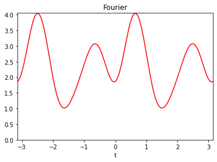
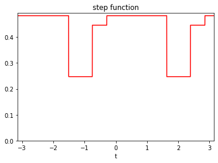
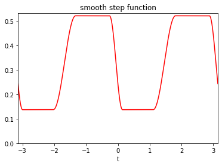
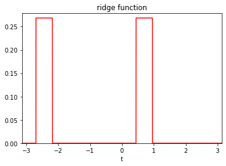
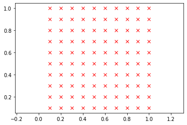
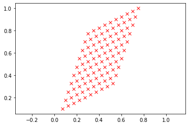
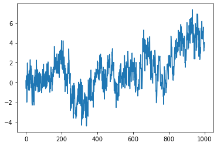
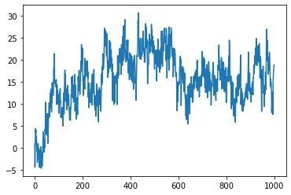

API: auxiliary classes
Code author: Frédéric Richard <frederic.richard_at_univ-amu.fr>
Periodic functions (perfunction)
- class afbf.Classes.PeriodicFunction.perfunction(ftype='step-smooth', param=0, fname='noname')
Bases:
objectThis class handles \(\pi\)-periodic positive parametric functions.
The available function representations are
the representation in a Fourier basis,
a representation by step functions,
a representation by smoothed step functions.
In the Fourier representation, the function is defined as
\[f(t) = a_0 + \sum_{m=1}^M a_{m, 1} \cos(2mt)+a_{m, 2} \sin(2mt),\]where \(a_0\) and \(a_{m, k}\) are real parameters.
A step function is defined as
\[f(t) = a_0 \left( \delta_{[-\frac{\pi}{2}, \psi_1)}(t) + \delta_{[\psi_{M+1}, \frac{\pi}{2})}(t) \right) + \sum_{m=1}^M a_i \delta_{[\psi_i, \psi_{i+1})}(t),\]where \(a_i\) are non-negative parameters, and \(\psi_i\) are ordered angles in \([-\frac{\pi}{2}, \frac{\pi}{2})\).
The definition of step functions can be adapted to include smooth transitions between intervals where the function is constant.
Note
Representations are defined by an expansion of the form
\[f(t) = \sum_{m=0}^M \alpha_m B_m(t)\]for some coefficients \(\alpha_m\) and basis functions \(B_m\).
- Example:
Definition of a function using the Fourier representation with \(M=3\) (i.e. 7 coefficients).
from afbf import perfunction f1 = perfunction('Fourier', 3, 'Fourier') f1.Display(1)
- Example:
Definition of a function with three steps.
from afbf import perfunction f2 = perfunction('step', 3, 'step function') f2.Display(2)
- Example:
Definition of a smooth function with two steps.
from afbf import perfunction f3 = perfunction('step-smooth', 2, 'smooth step function') f3.Display(3)
- Example:
Definition of a step function with a ridge.
from afbf import perfunction f4 = perfunction('ridge-step', 1, 'ridge function') f4.Display(4)
- Parameters:
fname (str) – Name of the function.
ftype (str) –
Type of the function representation. Some predefined type are available:
’step’: step function.
’step-constant’: constant function.
’step-ridge’: a step function with ridges.
’step-smooth’: smooth step function.
’Fourier’: Fourier representation.
fparam (ndarray) – Representation parameters \(\alpha_m\).
finter (ndarray) – Interval bounds \(\psi_i\) for a step function.
steptrans (boolean) – True if there are transitions between step.
trans (int) – indicate where step transitions are on even or odd intervals ({0, 1}).
basis (ndarray) – an array where values of the mth basis function \(B_m\) of the representation are on the mth row.
t (ndarray) – positions at which to evaluate the function.
stats (ndarray) – Basics statistics; min, max, mean, median of the function.
dev (ndarray) – Measures of deviations of the function; standard deviation, absolute deviations to the mean and to the median.
sharpness (ndarray) – Measures of sharpness computed on discrete function derivative (discrete tv-norm, maximum of absolute discrete derivative).
smode – Simulation mode of a step function (see SetStepSampleMode).
translate (float) – Translation to be applied to the function (defaut to 0).
rescale (float) – Factor of a rescaling to be applied to the function.
- ApplyTransforms(translate=None, rescale=None)
Apply translation and/or rescaling transform to the function.
- Parameters:
translate (float) – Translation.
rescale (float) – scaling factor (must be positive).
- Returns:
Attributes translate, rescale.
- ChangeParameters(fparam=None, finter=None)
Change parameters of the function while keeping its representation.
If parameters are not given, the parameters are changed at random.
- CheckValidity()
Check the validity of the periodic function.
- Returns:
True if attributes are properly defined.
- Return type:
boolean
- ComputeFeatures(m=10000)
Compute some features describing the function.
- Parameters:
m (int, optional) – Number of discrete positions to evaluate the function. Default to 10000.
- Returns:
Precision of the evaluation.
- Rtypes:
scalar
- Returns:
Attributes stats, dev, sharpness.
- ComputeFourierBasis()
Compute basis functions of the Fourier representation.
- Returns:
Attribute basis.
- ComputeStepBasis()
Compute basis functions of a representation by a step function at positions given in attribute t.
- Returns:
Attribute basis.
- Display(nfig=1)
Plot the graph of the function.
- Parameters:
nfig (int, optional) – The index of the figure. Default to 1.
- Evaluate(t=None)
Evaluate the function at some positions.
- Parameters:
t (ndarray, optional.) – Positions at which the function is computed.
- Returns:
Attribute values.
Note
If parameter t is omitted, the function is evaluated at points of the previous call of the function.
- InitFourierFunction(mode='init', M=3)
Define or update the Fourier representation of a periodic function.
- Parameters:
mode (str, optional) – The utilisation mode (‘init’, ‘update’). Use the ‘init’ mode to set the function representation at random (default), or ‘update’ to change its parameters at random. The default is ‘init’.
M (int, optional) – M * 2 + 1 is the number of Fourier coefficients. The default is 3.
- Returns:
Attribute fparam.
- InitStepFunction(ftype='step-constant', mode='init', M=2)
Define or update a step function at random.
- Parameters:
ftype (str, optional) – The type of step function. (‘step’,’step-constant’,’step-ridge’,’step-smooth’). The default is ‘step-constant’.
mode (str, optional) – The utilisation mode (‘init’, ‘update’). The default is ‘init’.
M (int, optional) – Number of steps. The default is 2.
- Returns:
Attributes fparam, finter.
- SampleFourierCoefficients()
Sample the Fourier coefficients.
- Returns:
Attribute fparam.
- SampleStepConstants(k=-1)
Sample constants within (0, 1).
- Parameters:
k (int, optional) – index where to put the minimal value. The default is -1.
- Returns:
Attribute fparam.
Note
The simulation of the step constants depends on the attribute smode:
- smode[0]=’unif’:
step values are sampled from a uniform distribution on (smode[1], smode[2]).
- smode[0]=’unifmin’:
the minimal step value is sampled from a uniform distribution on (smode[1], smode[2]).
- smode[0]=’unifrange’:
the step value range is sampled from a uniform distribution on (0, smode[2] - smode[1]).
The mode of simulation can be changed using SetStepSampleMode.
- SampleStepIntervals()
Sample interval bounds of a step function.
- Returns:
The index of the interval whose size is uniformly sampled.
- Return type:
int
Note
The simulation of the step constants depends on the attribute smode:
- smode[3]=’unif’:
the bounds are uniformly sampled over the interval (-pi/2, pi/2).
- smode[3]=’nonunif’:
the bounds are sampled so that the size of one of them is uniformly sampled.
smode[4] is a minimal interval size.
The mode of simulation can be changed using SetStepSampleMode.
- Save(filename)
Save a periodic function in a file.
- Parameters:
filename (str.) – address of the file.
Note
The function can be rebuilt using the function LoadPerfunction.
- SetStepSampleMode(mode_cst='unif', a=0, b=1, mode_int='unif', d=0)
Set the simulation mode for sampling parameters of a step function.
- Parameters:
mode_cst (str, optional) –
The mode of simulation of constants \(a_m\):
- if mode_cst = ‘unif’:
step values are sampled from a uniform distribution on (a, b).
- if mode_cst = ‘unifmin’:
the minimal step value is sampled from a uniform distribution on (a, b).
- if mode_cst = ‘unifrange’:
the step value range is sampled from a uniform distribution on (a, b).
The default is ‘unif’.
a (float, optional) – lower bound. The default is 0.
b (float, optional) – upper bound. The default is 1.
mode_int (str, optional) –
The mode of simulation of interval bounds \(\psi_m\):
- if mode_int=’unif’:
the bounds are uniformly sampled over the interval (-pi/2, pi/2).
- if mode_int=’nonunif’:
the bounds are sampled so that the size of one of them is uniformly sampled.
The default is ‘unif’.
d (float, optional) – Minimal value of interval size. The default is 0.
- Returns:
Attribute smode.
- SetUniformStepInterval()
Set uniform step intervals.
- Returns:
Attribute finter, trans.
- ShowParameters()
Show the parameters of the function.
Coordinates (coordinates)
- class afbf.Classes.SpatialData.coordinates(N=-1)
Bases:
objectThis class handles a set of coordinates in the plane.
Coordinates are pairs (x, y) of integers referring to a plane position (x / N, y / N). Set of coordinates can either be on a uniform grid or at arbitrary positions.
A uniform grid is defined as \([\![1, N]\!] \times [\![1, N]\!]\). It can also be signed, in which case it is of the form \([\![1, N]\!] \times [\![-N, N]\!]\).
- Example:
Define and display a grid of size 10 x 10.
from afbf import coordinates coord = coordinates(10) coord.Display(1)
- Parameters:
xy (ndarray of shape (ncoord, 2)) – set of Cartesian coordinates; xy[m, :] are the mth coordinates.
N (int) – Factor to be applied to coordinates.
Nx (int) – Grid dimension: number of x coordinates.
Ny (int) – Grid dimension: number of y coordinates.
grid (bool) – True if grid coordinates.
- ApplyAffineTransform(A)
Apply an affine transform A to coordinates.
Given a matrix \(A\) of shape (2, 2) and coordinates \((x, y)\), the transform is defined as
\[(\tilde x, \tilde y) = (x, y) A.\]- Parameters:
A (ndarray) – An array of shape (2, 2) of type int defining the affine transform.
- Returns:
Attributes xy.
- Example:
Apply an affine transform to a uniform grid.
from afbf import coordinates from numpy import array coord = coordinates(10) coord.Display(1) A = array([[1, 3], [2, 1]], dtype=int) coord.ApplyAffineTransform(A) coord.Display(2)
- CheckValidity()
Check the validity of coordinates.
- Returns:
True if attributes are properly defined, and false otherwise.
- Return type:
boolean
- DefineNonUniformLocations(xy)
Import a set of positions provided in an array.
- Parameters:
xy (ndarray) – An array of size (ncoord, 2) containing coordinates: xy[m, :] are the mth coordinates.
- Returns:
Attributes xy, M, N, grid.
- Example:
Define coordinates at some given positions.
from afbf import coordinates from numpy import array xy = array([[1, 2], [3, 4], [-2, 2], [5, 6]], dtype=int) coord = coordinates() coord.DefineNoneUniformLocations(xy)
- DefineSparseSemiBall(N, step=1)
Define a sparse semi-ball.
- Parameters:
N (int) – number of x- and y- coordinates.
- Returns:
Attributes xy, N, Nx, Ny, grid.
- DefineUniformGrid(N, step=1, signed=False)
Define a uniform grid.
- Parameters:
N (int) – number of x- and y- coordinates.
step (int, optional) – step between grid points. Default to 1.
signed (boolean, optional) – True if the grid is to be signed.
- Returns:
Attributes xy, N, Nx, Ny, grid.
- Display(nfig=1)
Display the positions given by coordinates.
- Parameters:
nfig (int, optional) – The index of the figure. Default to 1.
Spatial data (sdata)
- class afbf.Classes.SpatialData.sdata(coord=None, name='undefined')
Bases:
objectThis class handles spatial data.
Spatial data includes but are not restricted to images. Images are particular spatial data defined on a uniform grid.
- Parameters:
coord (coordinates) – Coordinates where data are defined.
values (ndarray) – Spatial values observed at each position of coord; values[m] is the value observed at position coord[m, :].
:param ndarray M: size of the image (number of rows, columns).
- Parameters:
name (str, optional) – Name of data. Default to ‘undefined’.
- ComputeEmpiricalSemiVariogram(lags)
Compute the empirical semi-variogram of an image.
- Parameters:
lags (coordinates) – Lags at which to compute quadratic variations.
- Returns:
The semi-variogram.
- Return type:
Note
This method only applies to an image.
- ComputeIncrements(hx, hy, order=0)
Compute increments of an image.
Given some lags \((h_x, h_y)\) and an order \(J\), increments \(Z\) of order \(J\) of the image form an image defined in a recursive way by
\[\begin{split}\left\{ \begin{array}{l} X^{(0)} = X, \\ X^{(j+1)} [x, y] = X^{(j)}[x, y] - X^{(j)}[x - h_x, y - h_y], \:\: \mathrm{for} \:\: j = 0, \cdots, J, \\ Z = X^{(J+1)}. \end{array}\right.\end{split}\]- Parameters:
hy (int hx,) – Horizontal and vertical lags.
order (int) – Order of the increment. The default value is 0.
- Returns:
The increment image.
- Return type:
- ComputeLaplacian(scale=1)
Compute the discrete laplacian of an image.
Given some scale \(s\), the Laplacian \(Z\) of the image is an image defined as
\[Z[x, y] = 4 X[x, y]-X[x-s, y]-X[x+s, y]- X[x, y-s] - X[x, y+s].\]- Parameters:
scale (int , optional) – Scale at which the Laplacian is computed. Default to 1.
- Returns:
The image Laplacian.
- Return type:
- ComputeQuadraticVariations(lags, order=0)
Compute the quadratic variations of an image.
- Parameters:
lags (coordinates) – Lags at which to compute quadratic variations.
- Aram order:
The order of the quadratic variations. The default is 0.
- Returns:
Quadratic variations.
- Return type:
Note
This method only applies to an image.
- CreateImage(M)
Create an image.
- Parameters:
M (ndarray) – An array of size 2 giving the number of rows and columns of the matrix.
- Returns:
Attribute coord.
- Display(nfig=1)
Display an image.
- Parameters:
nfig (int, optional) – Figure index. Default to 1.
- ImportImage(filename)
Import an image.
- Parameters:
filename (str.) – Physical address of the image.
- Save(filename)
Save an image in a file
- Parameters:
filename (str) – File name (without extension).
Process (process)
- class afbf.Classes.RandomProcess.process(type='fbm', param=-1)
Bases:
objectThis class handles random processes, with a focus on fractional Brownian motions (FBM).
A FBM is a Gaussian random process with stationary increments. Its properties (regularity, order of self-similarity, …) are determined by a single parameter \(H \in (0, 1)\), called the Hurst index.
- Example:
Simulation of a FBF with Hurst index \(H=0.2\) at times \(\{1, \cdots, T\}\).
from afbf import process model = process('fbm', param=0.2) model.Simulate(T=1000) model.Display(1)
:param ndarray autocov: The autocovariance of the process.
:param ndarray spect: The Fourier spectrum of the autocovariance.
:param ndarray vario: The semi-variogram of the process.
:param ndarray y: The values of a simulation of the process.
- ComputeAutocovariance(T=10)
- Compute the autocovariance of the process increments
at uniformly-spaced lags \(\{0, 1, \cdots, T\}\).
- Parameters:
T (int) – The maximal lag. Default is 10.
- Returns:
Attribute autocov.
- ComputeAutocovarianceSpectrum()
Compute the Fourier spectrum of the periodized autocovariance.
- Returns:
Attribute spect.
- ComputeFBMAutocovariance(T)
Compute the autocovariance of the increments of a fractional Brownian motion of Hurst index \(H\) at uniformly-spaced lags \(\{0, 1, \cdots, T-1 \}\).
- Parameters:
T (int) – The maximal lag.
- Returns:
Attribute autocov.
- ComputeFBMSemiVariogram(lags, logvario=0)
Compute the semi-variogram of the fbm at lags given in lags.
- Parameters:
lags (ndarray) – Lags where to compute the variogram.
logvario (int, optional) – if logvario>0, a log semi-variogram is computed. The default is 0.
- Returns:
Attribute vario.
- ComputeSemiVariogram(lags, logvario=0)
Compute the semi-variogram of the process at lags given in lags.
- Parameters:
lags (ndarray) – Lags where to compute the variogram.
logvario (int, optional) – if logvario>0, a log semi-variogram is computed. The default is 0.
- Returns:
Attribute vario.
- Display(nfig=1)
Display the realization of the process.
- Parameters:
nfig (int, optional) – Figure index. The default is 1.
- ExtendFBM(M=5)
Extend the definition of a FBM to a non self-similar process.
- Parameters:
M (int, optional) – The number of parameters used for defining the extension function. The default is 5.
- Example:
Simulation of an extended FBF with Hurst index \(H=0.2\) at times \(\{1, \cdots, T\}\).
from afbf import process model = process('fbm', param=0.2) model.ExtendFBM() model.Simulate(T=1000) model.Display(1)
- IntegrateProcess(order)
Integrate the process at a given order.
- Parameters:
order (int) – The order of integration.
- Returns:
Attribute y.
- Simulate(T)
- Simulate the process at uniformly-spaced positions
\(\{0, 1, \cdots, T\}\).
- Parameters:
T (int) – The maximal lag.
- Returns:
Attribute y.
- Simulate_CirculantCovarianceMethod(T)
Simulate process increments at positions \(\{0, 1, \cdots, T\}\).
Note
The method was developed by Wood and Chan. It is described in [14].
- Parameters:
T (int) – The maximal lag.
- Returns:
Attribute y.
Variable projection (minimize)
Turning bands (tbparameters)
- class afbf.Simulation.TurningBands.tbparameters(K=500)
Bases:
objectThis class handles parameters of the turning band field.
- Parameters:
K (int) – the number of bands.
Kangle (ndarray) –
Angles of the turning bands. The tangent of each angle \(\varphi\) have a tangent which satisfies
\[\tan(\varphi) = \frac{p}{q},\]for some \(p \in \mathbb{Z}\) and \(q \in \mathbb{N}^*\).
Pangle (ndarray) – Denominators \(q\) of angle tangents.
Qangle (ndarray) – Numerators \(p\) of angle tangents.
cost (scalar) – Angle cost (dynamic programming).
acc (scalar) – Precision (dynamic programming).
- DisplayInformation()
Display information about simulation.
- OptimalAngles(N=500)
Compute a set of optimal angles by dynamic programming.
- Parameters:
N (scalar) – The expected precision. if \(N < 1\), the precision is set to N else the precision (in radians) is set to \(\frac{pi}{N}\).
- Returns:
Attributes Kangle, Pangle, Qangle.
Note
The dynamic programming algorithm finds an optimal subset \(S'\) of angles among a set \(\Phi\) of possible angles whose tangents are rational. :math:`Phi`is a subset of
\[\{\varphi \in [-\pi/2,\pi/2], \tan(\varphi)=p/q, p \in \mathbb{Z}, q \in \mathbb{N}^\ast, p \wedge q=1\}.\]A cost \(C(\varphi)=\vert q \vert+p\) is associated to each angle \(\varphi\).
The optimal subset \(\Phi'\) minimizes \(\sum_{\varphi \in \Phi'} C(\varphi)\) under the constraint that the difference between two successive angles are below a given precision.
- Precision()
Compute the precision of the turning bands.
- QuasiUniformAngles(K=100000)
Build a set of K angles which are approximately uniform on the interval \([-\frac{\pi}{2},\frac{\pi}{2}]\).
- Parameters:
K (int, optional) – A number of angles. The default is 100000.
- Returns:
Attributes Kangle, Pangle, Qangle.
- SimulationCost()
Compute the computational cost associated to the turning bands.
ndarray
- class afbf.utilities.ndarray
- ndarray(shape, dtype=float, buffer=None, offset=0,
strides=None, order=None)
An array object represents a multidimensional, homogeneous array of fixed-size items. An associated data-type object describes the format of each element in the array (its byte-order, how many bytes it occupies in memory, whether it is an integer, a floating point number, or something else, etc.)
Arrays should be constructed using array, zeros or empty (refer to the See Also section below). The parameters given here refer to a low-level method (ndarray(…)) for instantiating an array.
For more information, refer to the numpy module and examine the methods and attributes of an array.
Parameters
(for the __new__ method; see Notes below)
- shapetuple of ints
Shape of created array.
- dtypedata-type, optional
Any object that can be interpreted as a numpy data type.
- bufferobject exposing buffer interface, optional
Used to fill the array with data.
- offsetint, optional
Offset of array data in buffer.
- stridestuple of ints, optional
Strides of data in memory.
- order{‘C’, ‘F’}, optional
Row-major (C-style) or column-major (Fortran-style) order.
Attributes
- Tndarray
Transpose of the array.
- databuffer
The array’s elements, in memory.
- dtypedtype object
Describes the format of the elements in the array.
- flagsdict
Dictionary containing information related to memory use, e.g., ‘C_CONTIGUOUS’, ‘OWNDATA’, ‘WRITEABLE’, etc.
- flatnumpy.flatiter object
Flattened version of the array as an iterator. The iterator allows assignments, e.g.,
x.flat = 3(See ndarray.flat for assignment examples; TODO).- imagndarray
Imaginary part of the array.
- realndarray
Real part of the array.
- sizeint
Number of elements in the array.
- itemsizeint
The memory use of each array element in bytes.
- nbytesint
The total number of bytes required to store the array data, i.e.,
itemsize * size.- ndimint
The array’s number of dimensions.
- shapetuple of ints
Shape of the array.
- stridestuple of ints
The step-size required to move from one element to the next in memory. For example, a contiguous
(3, 4)array of typeint16in C-order has strides(8, 2). This implies that to move from element to element in memory requires jumps of 2 bytes. To move from row-to-row, one needs to jump 8 bytes at a time (2 * 4).- ctypesctypes object
Class containing properties of the array needed for interaction with ctypes.
- basendarray
If the array is a view into another array, that array is its base (unless that array is also a view). The base array is where the array data is actually stored.
See Also
array : Construct an array. zeros : Create an array, each element of which is zero. empty : Create an array, but leave its allocated memory unchanged (i.e.,
it contains “garbage”).
dtype : Create a data-type. numpy.typing.NDArray : An ndarray alias generic
w.r.t. its dtype.type <numpy.dtype.type>.
Notes
There are two modes of creating an array using
__new__:If buffer is None, then only shape, dtype, and order are used.
If buffer is an object exposing the buffer interface, then all keywords are interpreted.
No
__init__method is needed because the array is fully initialized after the__new__method.Examples
These examples illustrate the low-level ndarray constructor. Refer to the See Also section above for easier ways of constructing an ndarray.
First mode, buffer is None:
>>> np.ndarray(shape=(2,2), dtype=float, order='F') array([[0.0e+000, 0.0e+000], # random [ nan, 2.5e-323]])
Second mode:
>>> np.ndarray((2,), buffer=np.array([1,2,3]), ... offset=np.int_().itemsize, ... dtype=int) # offset = 1*itemsize, i.e. skip first element array([2, 3])